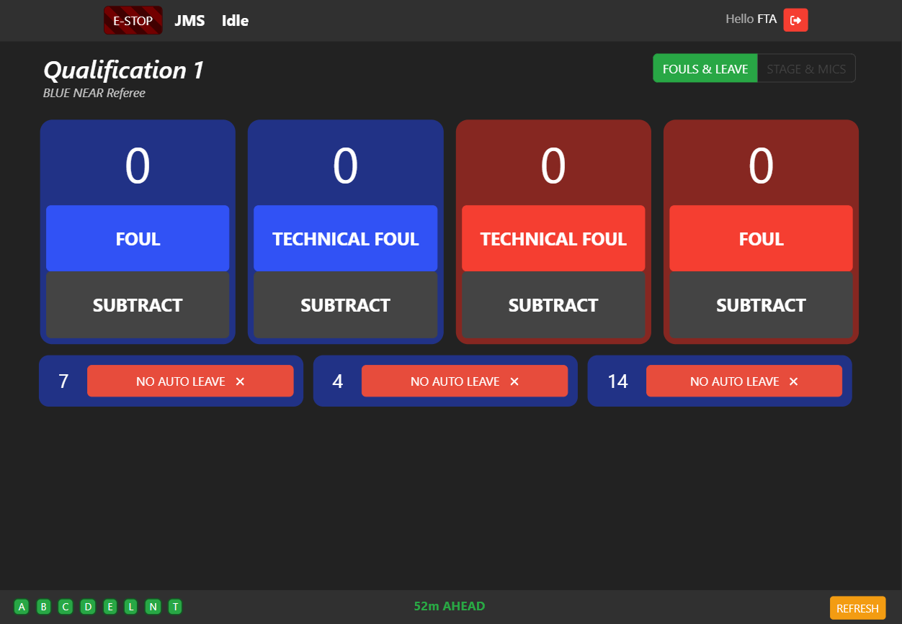
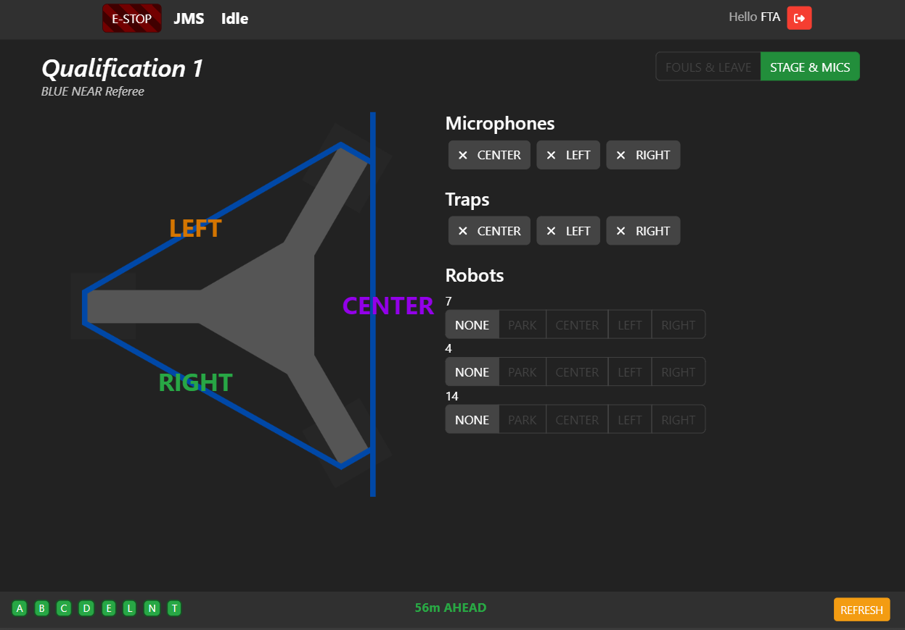
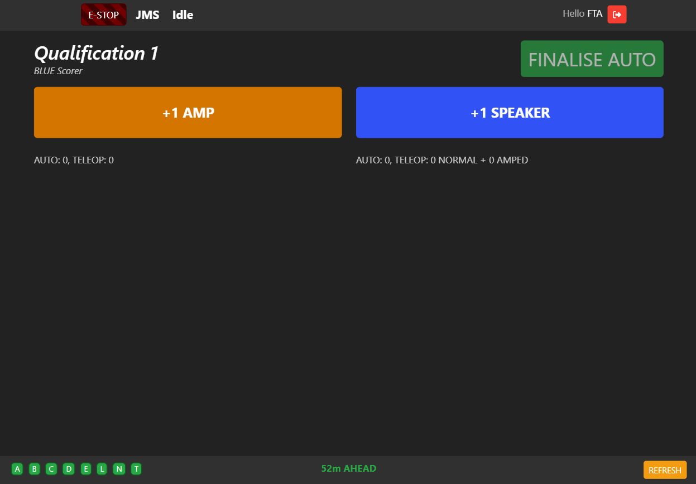
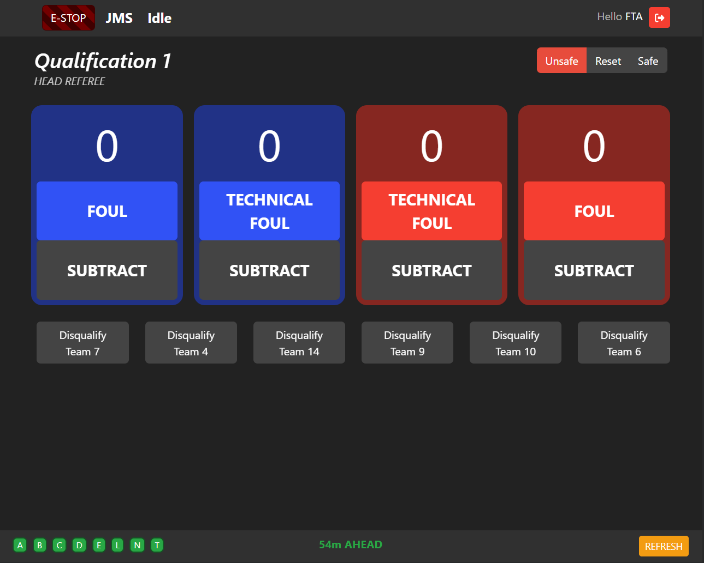
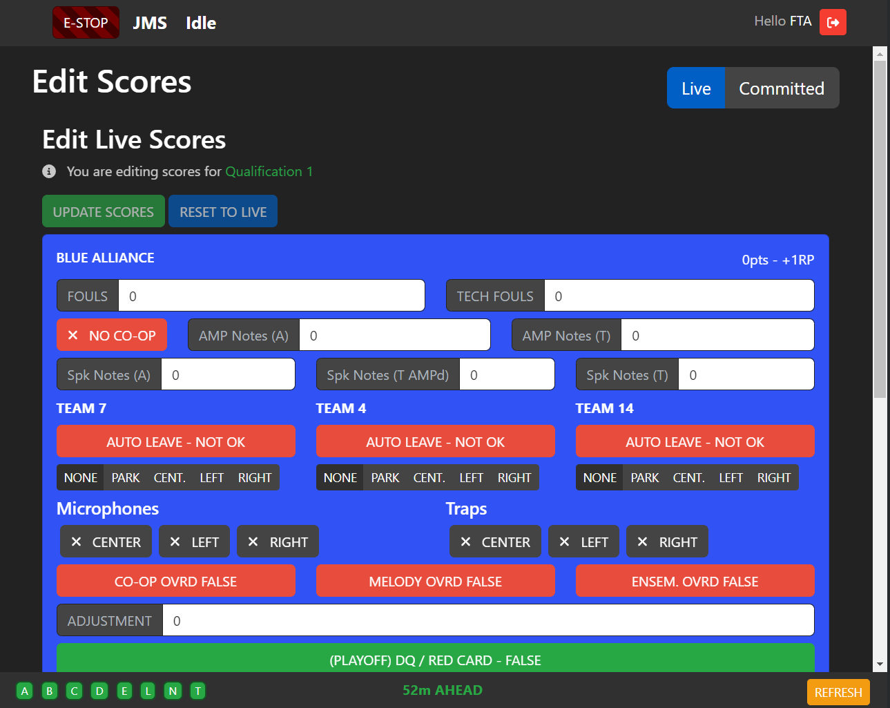

REFEREE / SCORER
Referee
As a Referee, you’re responsible for enforcing the rules outlined in the FRC Game Manual and, depending on the year, scoring certain game elements at the end of the auto and teleop periods.
Your Tablet Screen (accessible from the home page) looks like the below. See JMS Navigation for more information about the peripheral elements.
Fouls and Tech Fouls
At the centrepoint of the screen is the Foul / Tech Foul counter. This is pretty straightforward - when a team performs an action that earns a foul, increase the counter for their own alliance (i.e. if a blue robot is the subject of a foul, click the blue “foul” button). You may also subtract fouls here if you accidentally click a button.
Game Specific
The Referee screen also contains game-specific scores. For 2024, this includes the AUTO LEAVE status of each robot (the set of push-buttons at the bottom), and the state of the Stage and Microphones at the end of the teleoperated period. To enter these scores, select “STAGE & MICS” at the top of the screen.
Select the state of each microphone and trap, and then enter the ONSTAGE status of each robot. A “minimap” representation of the stage is provided to orient yourself towards stage left, right, and center - with the vertical marked line representing the AUTO line towards the center of the field. All buttons are colour-coded according to the minimap.
Important
You don’t have to manually calculate whether a trap or microphone counts for the ONSTAGE/SPOTLIT/other bonuses - JMS will do this for you. Enter the data as it is represented on the field in front of you, and JMS will figure out the rest.
Scorer
As a Scorer, you’re responsible for scoring the gamepieces on the field. The specifics change from year to year, but in general if a gamepiece exits the field or is scored prior to the endgame period, it’s on you to count it.
Your Tablet Screen (accessible from the home page) looks like the below. See JMS Navigation for more information about the peripheral elements.
After the match starts, each time you see a note exit the AMP or SPEAKER, click the associated button. JMS will log this and calculate the running score for the alliance, whether they can AMPLIFY their speaker, and whether they can trigger the CO-OPERTITION bonus.
At the end of the AUTO period, click the FINALISE AUTO button to switch to scoring in TELEOP.
Important
Make sure you hit FINALISE AUTO at the end of the auto period - it will not happen automatically. JMS needs to know what notes were scored in AUTO and which were scored in TELEOP in order to appropriately calculate the running score!
Warning
Once you score a game element, it cannot be unscored! This is because the scored elements directly impact the timing of the AMPLIFICATION feature. If you accidentally hit one of the buttons, note it in the back of your mind and notify the HEAD REFEREE so they can determine the appropriate course of action.
Head Referee
As Head Referee, your screen will have extra options.
Entry Condition
In the top right corner, you have access to set the field’s ENTRY CONDITION. The ENTRY CONDITION, reflected on the Team Signs, specifies who is allowed on the field at any given time.
UNSAFE: The default condition. In UNSAFE, the field cannot be entered by anyone except the FTA. This condition will usually be set for you when the field is ARMed by the scorekeeper.
RESET: The field is safe for the FIELD RESET crew. This should be set as soon as possible once scores are finalised.
SAFE: The field is safe for the teams. This should be set once the field is declared safe by the Field Supervisor / FTA.
Disqualification
Also in this screen, you may choose to DISQUALIFY a team, under the provisions set out in the Game Manual.
Attention
In Qualifications, a DISQUALIFICATION will result in a team being awarded ZERO Ranking Points for that match. In Playoffs, a DISQUALIFICATION for any team will result in ZERO Points for the entire alliance.
DISQUALIFICATION only applies for a single match.
Edit Scores
You may choose to edit the scores for a match before or after the score is committed. Strictly speaking, you may do this yourself, but usually you would do this in conjunction with the SCOREKEEPER.
The “Edit Scores” tile on the home screen will take you to the Edit Scores screen, which you can choose to either edit the LIVE scores (prior to the scores being committed), or the COMMITTED SCORES (after the scores have been committed).
Important
All changes to COMMITTED scores are version tracked.
Attention
Any changes to the score (once “UPDATE SCORES” in LIVE or “PUSH SCORES” in COMMITTED) is immediately put into effect. Changes will automatically be propagated to the Qualification rankings and on The Blue Alliance.
Warning
During Playoffs, editing an already COMMITTED score will NOT change the playoff bracket. Once scores are committed, the outcome is locked once the subsequent matches are generated, as otherwise a generated match would have to be deleted.